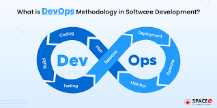

DevOps
Mis on DevOps
DevOps on tavade , tööriistade ja kultuurifilosoofia kogum ,
mis automatiseerib ja integreerib tarkvaraarenduse ja
IT-meeskondade vahelisi protsesse. See rõhutab meeskonna
mõjuvõimu suurendamist, rühmadevahelist suhtlust ja
koostööd ning tehnoloogia automatiseerimist.
-
Etapp - Arendus:
Arendus- ja Operatiivmeeskond on üheks meeskonnaks tehtud ja arendavad koos seda proj
-
Etapp - Testimine:
Kus see suur meeskond testib seda mida nad koos teinud on ja parandavad asju kui vaja.
Joonis:

| Eelised |
Puudused |
|
Kiirus
|
Keerukus
|
|
Täiustatud koostöö
|
Oskuste lünk
|
|
Kiire kasutuselevõtt
|
|
|
Turvalisus
|
|
Lingid
Eelised/ Atlassian
Puudused/ Synapseindia